Visual Library
Asset Library
ไฟล์ภาพ ไอคอน และฟอนต์ทั้งหมดที่โปรเจ็คใช้จริง — แยกตามหมวดตามโครงสร้างโฟลเดอร์ python-app/. หน้านี้ generate อัตโนมัติจากโฟลเดอร์จริง (ไม่ตกหล่น ไม่ค้างของเก่า).
Summary
8 SVG
ไอคอน themed (assets/icons/) — v1.8.21
45 PNG
UI icons (assets/) — white, auto-invert
10 Status
good / bad / error / pin …
6 Brand
splash · logo · meteor
5 Fonts
bundled .ttf (fonts/)
71 Avatars
npc_images/main_characters/
ใช้งานบนเวอร์ชันล่าสุด (36/63 ไอคอน)
legacy ไฟล์รุ่นเก่า
SVG Icons assets/icons/
ไอคอน vector ใหม่ (v1.8.21) — โหลดผ่าน pyqt_ui/qt_icons.py แล้ว tint สีตามธีม อัตโนมัติ (asset เดียวใช้ได้ทุกธีม). แสดงด้วยสีขาวบนพื้นเข้มตามต้นฉบับ.
chevron.svgModel · ลูกศร dropdown
edit.svgModel · แก้ไข API Key
eye_close.svgModel · ซ่อน API Key
eye_open.svgModel · เผย API Key
folder.svgSettings · ปุ่มเปิดโฟลเดอร์ log
lock.svgModel · พารามิเตอร์ล็อก (trial)
reload.svgSettings · เมนูรีสตาร์ท
save.svgModel · บันทึก API Key
PNG UI Icons assets/
ไอคอน UI สีขาว (auto-invert บนธีมสว่าง) ใช้ใน TUI / Mini UI / overlays. พิมพ์ค้นหาเพื่อกรอง:
add.png
add_1.png
arrow.png
BG_lock.png
camera.png
chat.png
clear.png
clear_2.png
cloud.png
copy.png
del.png
disappear.png
draw.png
draw_1.png
expand.png
fade.png
legacy
fade_old.png
force.png
gap.png
images.png
loading_4.png
lock.png
normal.png
note.png
pause.png
pin.png
play.png
resize.png
rotate.png
s_force.png
s_force_m.png
legacy
s_force_m_old.png
scale.png
scale_16_9.png
scale_1_1.png
scale_9_16.png
setting.png
swap.png
theme.png
theme_A.png
theme_C.png
trans.png
TUI_BG.png
unlock.png
unpin.png
Status / Colored assets/
ไอคอนที่มีสีในตัว (สถานะ / pin / like) — ไม่ invert ตามธีม.
good.png
bad.png
error.png
confirm.png
liked.png
unlike.png
green_pin.png
pin_gold.png
red_icon.png
black_icon.png
Brand & Art assets/
ภาพแบรนด์และอาร์ตเวิร์ก — splash (ปัจจุบัน + รุ่นเก่า/fallback), โลโก้, meteor. เรียงตัวที่ใช้งานก่อน แล้วตามด้วย legacy.
MBBvisual.jpgsplash ปัจจุบัน (fallback → _mar26 / _legacy)
mbb_meteor.pngsplash meteor + โลโก้ main window
legacy
MBBvisual_mar26.pngเลิกใช้แล้ว / fallback
MBBvisual_legacy.pngเลิกใช้แล้ว / fallback
legacy
YBB_logo.pngเลิกใช้แล้ว / fallback
mbb_pixel.pngเลิกใช้แล้ว / fallback
Fonts fonts/
ฟอนต์ที่ bundle มากับโปรเจ็ค — PyQt6 ต้อง QFontDatabase.addApplicationFont() (จัดการโดย QtFontManager). ตัวอย่าง render จริง:
ก ข ค Aa Bb · MBB 123
Anuphan.ttfฟอนต์หลัก Thai — TUI / Logs default
ก ข ค Aa Bb · MBB 123
Caveat.ttfลายมือ — ชื่อใน Polaroid
ก ข ค Aa Bb · MBB 123
FC Minimal.ttfitalic segments ใน rich text
ก ข ค Aa Bb · MBB 123
Google Sans 17pt Medium.ttfUI accent
ก ข ค Aa Bb · MBB 123
Pacifico.ttfdecorative
NPC Avatars 71 files
ภาพตัวละครใน npc_images/main_characters/ (512px WebP, แสดงใน NPC Manager + speaker icon). คลิกเพื่อกาง:
แสดง avatars ทั้งหมด (71)
2b
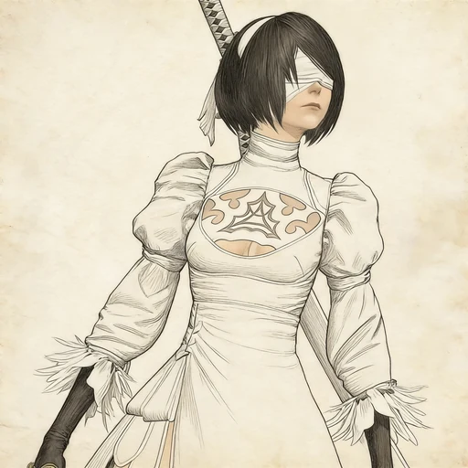
2p
9s
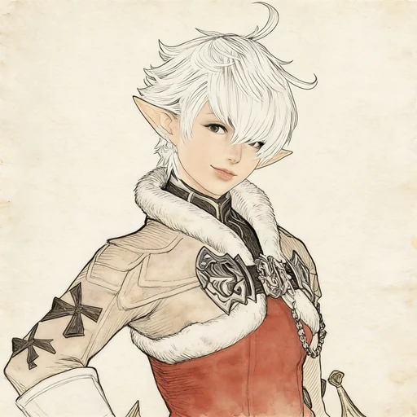
alisaie
alphinaud
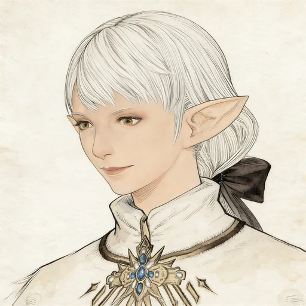
ameliance_leveilleur
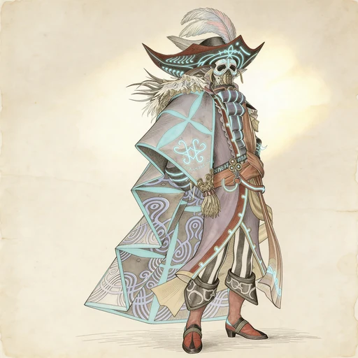
amon
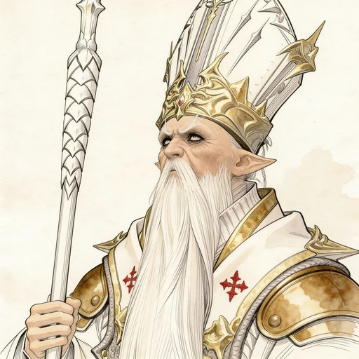
archbishop_thordan_vii
ardbert
aymeric
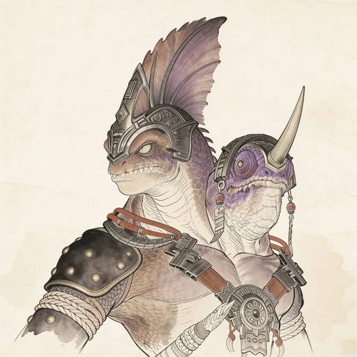
bakool_ja_ja
 bakool_ja_ja_the_mighty
bakool_ja_ja_the_mighty
 bakool_ja_ja_the_mystic
chainuzz
character
cid_garlond
crystal_exarch
bakool_ja_ja_the_mystic
chainuzz
character
cid_garlond
crystal_exarch
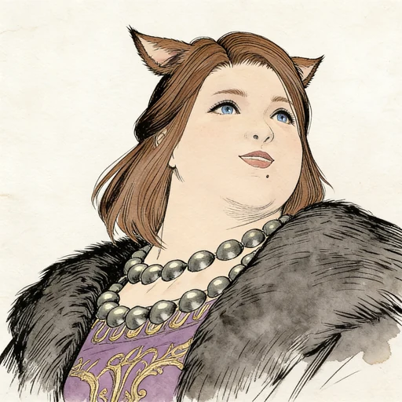
duliachai
emet_selch
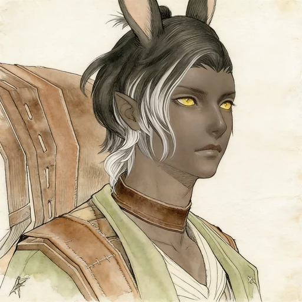
erenville
estinien
eyaney
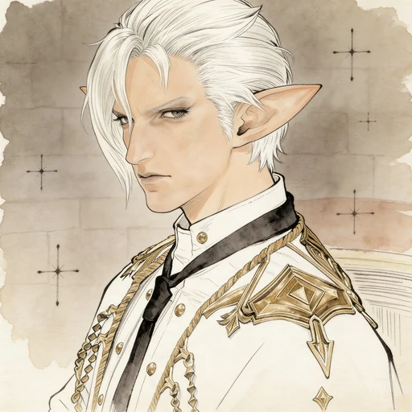
fourchenault_leveilleur
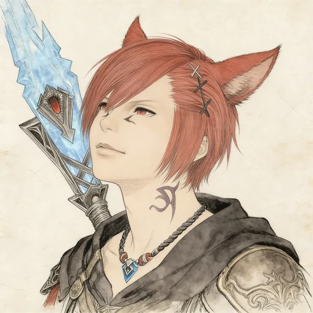
g_raha_tia
gaia
gaius
gosetsu
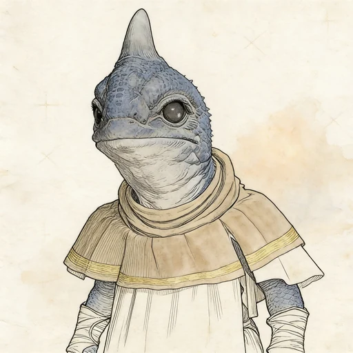
gulool_ja
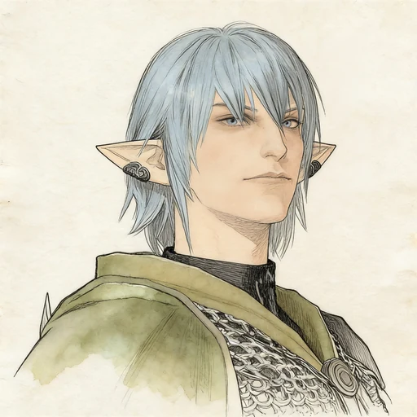
haurchefant
hermes
hien
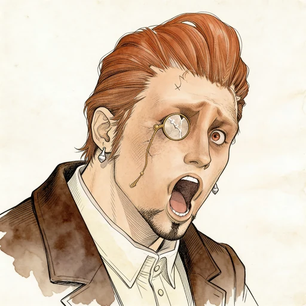
hildibrand
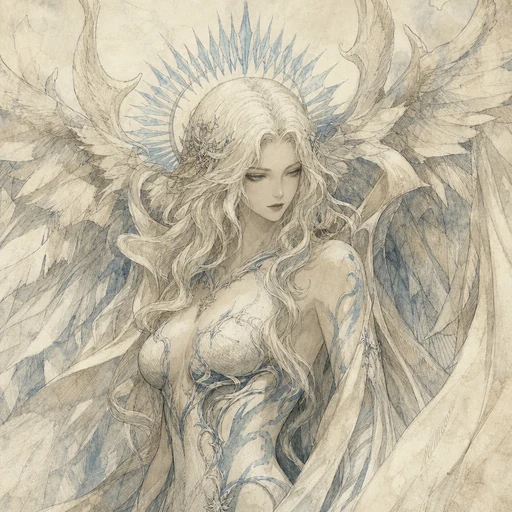
hydaelyn
hythlodaeus
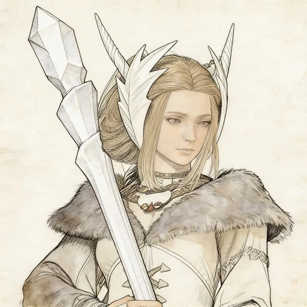
kan_e_senna
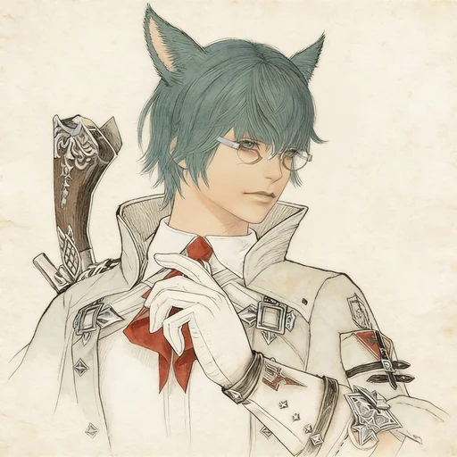
koana
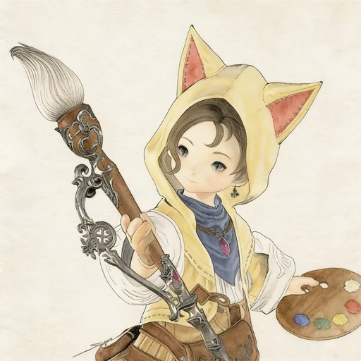
krile
louisoix
lumull
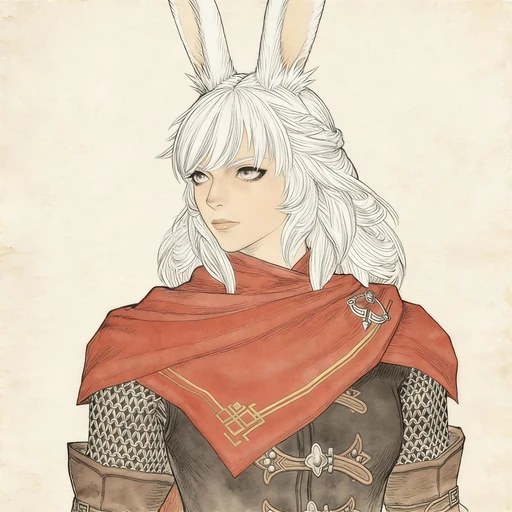
lyna
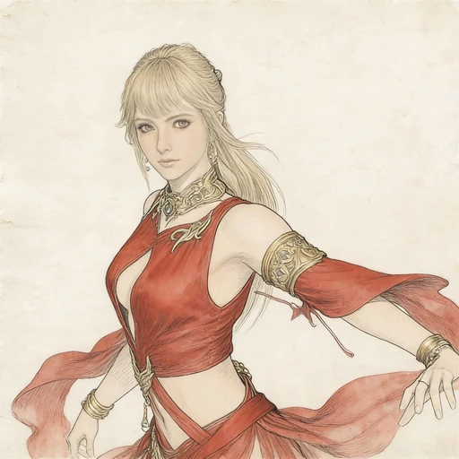
lyse
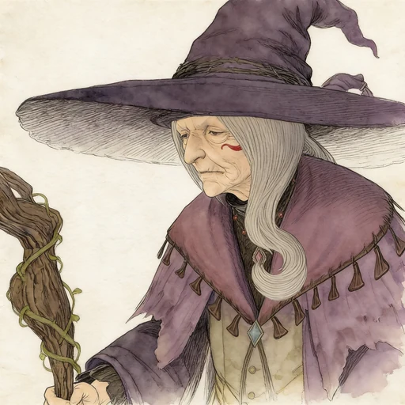
matoya
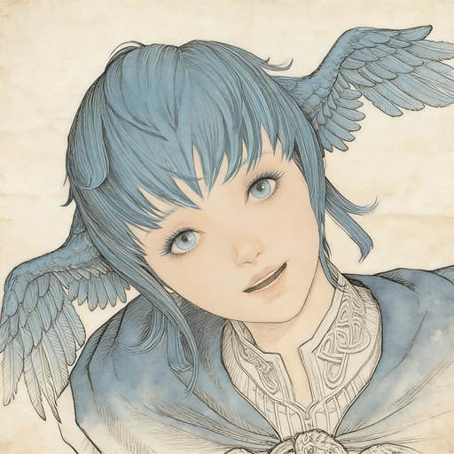
meteion
minfilia
nanamo_ul_namo
nashu_mhakaracca
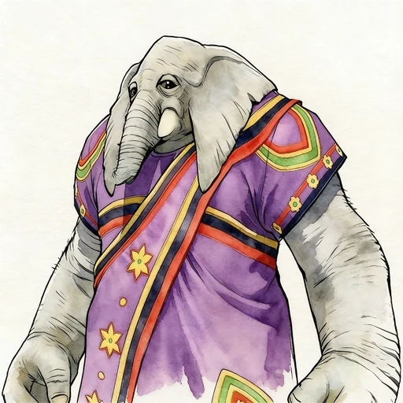
nidhana
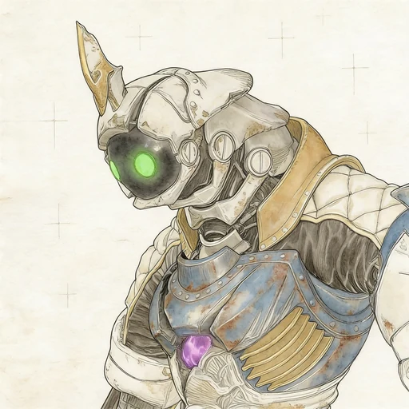
otis
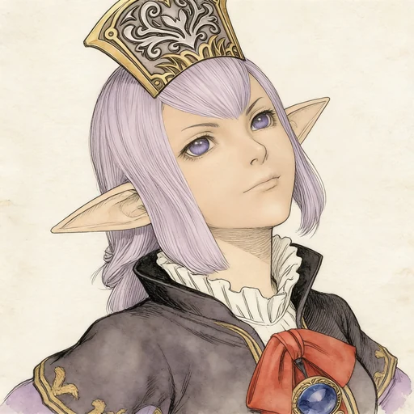
prishe
ranjit
raubahn
ryne
sphene
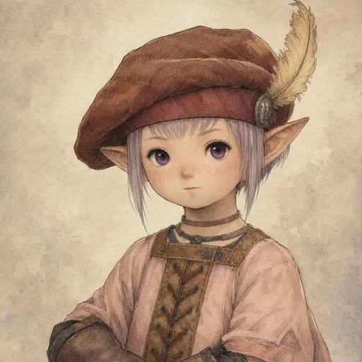
tataru
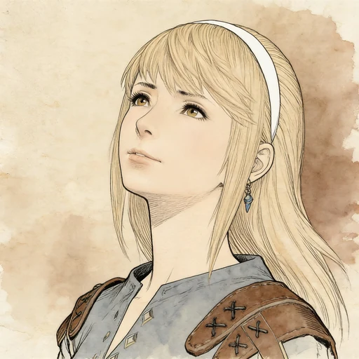
tesleen
thancred
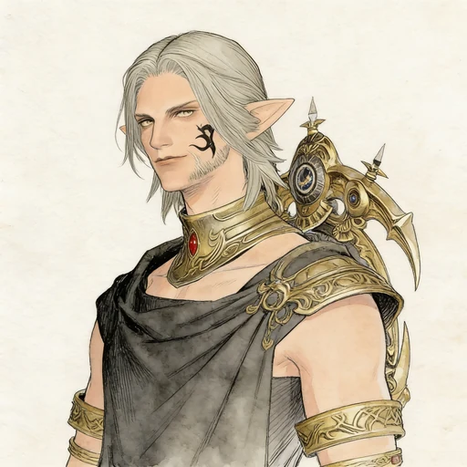
urianger
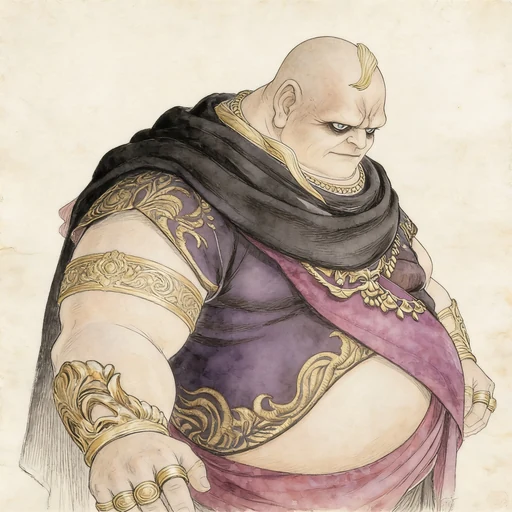
vauthry
venat
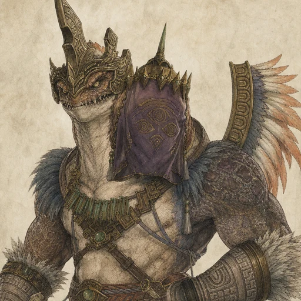
vow_of_resolve_gulool_ja_ja
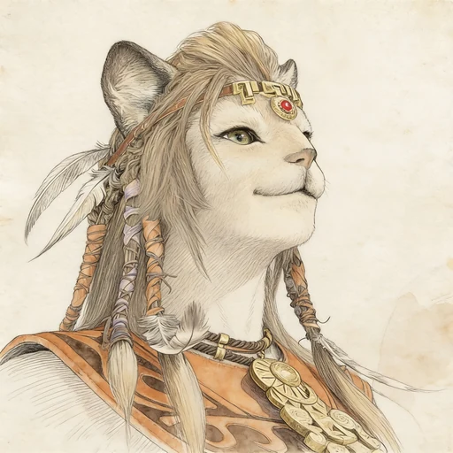
wuk_lamat
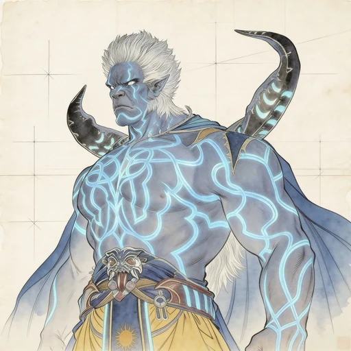
xande
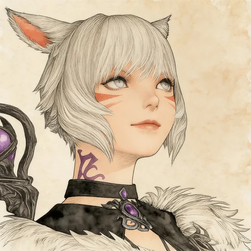
y_shtola
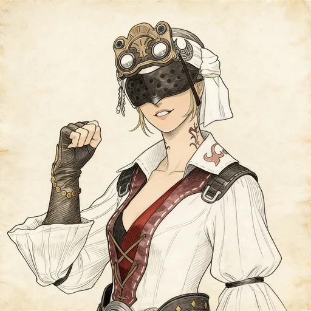
yda
yotsuyu
yugiri
zenos
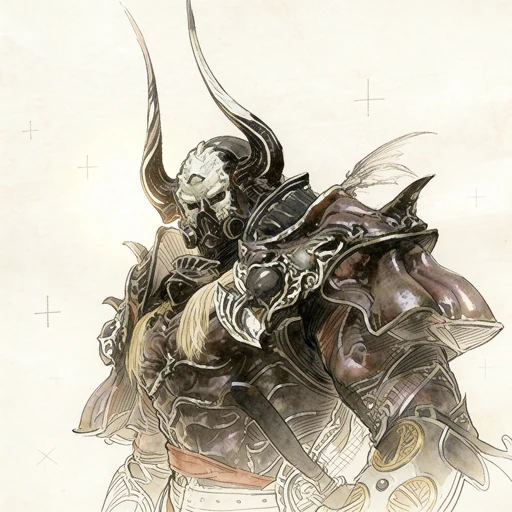
zenos_yae_galvus
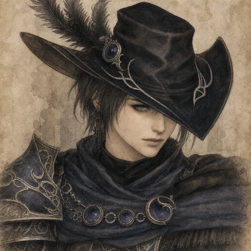
zero
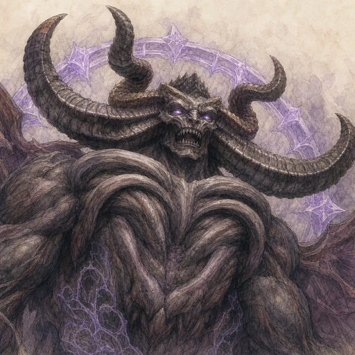
zodiark
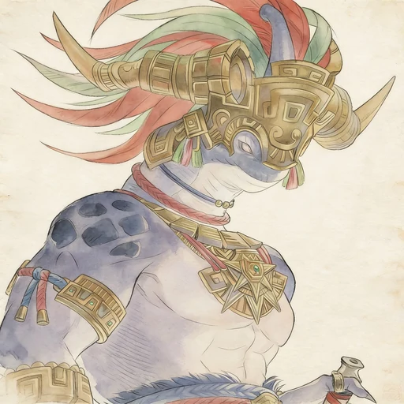
zoraal_ja